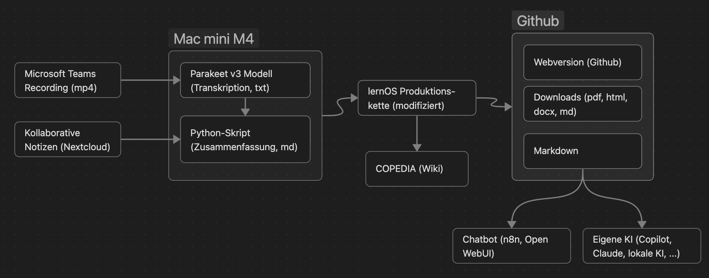

Dokumentation
Bei der loscon werden wir wieder unseren bewährten Ansatz der KI-gestützten Veranstaltungsdokumentation verwenden. Die Aufzeichnungen der Programmpunkte werden automatisch transkripiert, zusammengefasst und zur zum loscon26 Unkonferenzband zusammengestellt. Natürlich werdet ihr im Nachgang mit der Dokumentation auch über einen Chatbot "reden" können. Die gesamte Dokumentation wird im Nachgang unter Loscon26 – Copedia zugreifbar sein.
Workflow KI-basierte Dokumentation
Das folgende Bild zeigt schematisch den Workflow der automatischen Erstellung der Dokumentation:

Für die Zusammenfassung der Inhalte wollen wir dieses Jahr verschiedene Large Language Modell (LLM) verwenden:
-
Claude Sonnet 4.6 als Referenz für die Qualität
-
OpenAI GPT OSS 120B mit Inferenz auf dem Ionos AI Hub in Deutschland
-
Alibaba Qwen3.5 9B über Openrouter als "Proof of Concept" mit einem Modell, das auch auf einem Laptop laufen kann.